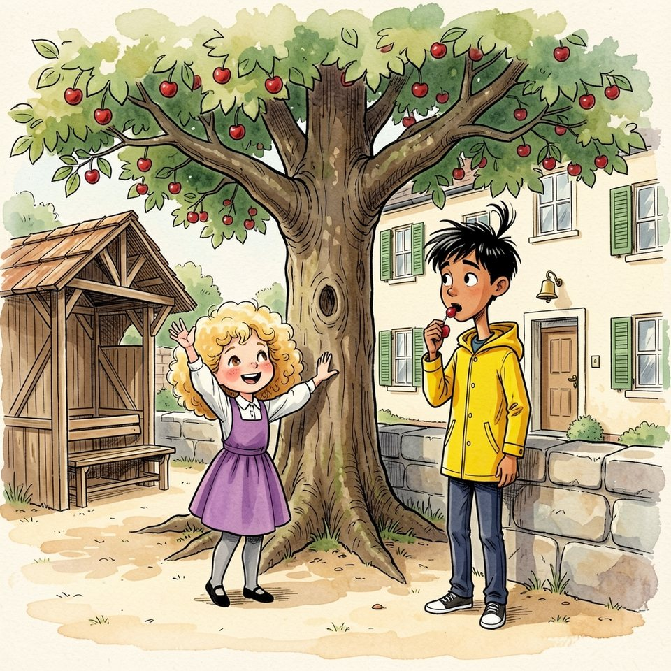

Titistoire › Les Comètes (6-8 ans)
Dis-lui de ma part
Une année à Virevent, l'histoire du mois de juin : Jeanne, Gaspard, Suzie et Marin.

▶ Écouter et regarder l'histoire
Gratuit, sans inscription : la voix lit, le texte suit mot à mot, les images tournent comme dans un album.
Le texte de l'histoire
En juin, Virevent sentait la confiture avant même qu'on l'ait faite. Le cerisier de la cour ployait sous les cerises, et les moineaux de toute la ville tenaient conseil dans ses branches.
Monsieur Grison avait fixé la règle, la craie levée : chacun avait droit aux cerises qu'il atteignait sans grimper. Marin, qui dépassait tout le monde d'une tête, en mangeait beaucoup. Suzie, aucune.
Ce vendredi-là, pourtant, elle se haussa sur la pointe des pieds, tendit le bras jusqu'au bout des ongles, et la branche la plus basse voulut bien se laisser attraper.
Dans sa main, il y avait deux cerises d'un rouge presque noir, tenues ensemble par une seule queue. Des jumelles. Suzie n'en avait jamais vu de si belles, ni de si inséparables.
Elle fit le compte : une pour Jeanne, une pour Gaspard. Le compte tombait juste. Elle glissa les jumelles dans la poche de sa robe, tout doucement, et chercha ses deux amis des yeux.
Ses amis, justement, il fallait les chercher en deux endroits. Gaspard campait sous le préau, Jeanne trônait sur le muret, à l'autre bout de la cour. Entre eux, quarante pas et un cerisier.
Cela durait depuis lundi. Le bateau que Gaspard avait construit au moulin attendait sur ses tréteaux depuis mai : on ne mettait pas à l'eau un bateau sans nom. Samedi, on devait le peindre sur la coque. Tout le malheur venait de là.
« La Fulgurante ! » avait décrété Jeanne. « Il ira plus vite que le vent, que la foudre et que les hirondelles réunis ! » « Le Solide », avait riposté Gaspard. « Premièrement, il ne coulera pas. Deuxièmement, c'est moi qui ai planté les clous. »
Depuis, ils ne s'adressaient plus la parole. Ils l'adressaient à Suzie. Elle, elle trouvait les deux noms très jolis ; elle l'avait même assuré à chacun, ce qui n'avait rien arrangé du tout.
Elle approchait du muret, les cerises au chaud dans sa poche, quand Jeanne pointa le menton vers le préau. « Suzie ! Dis-lui de ma part que c'est une tête de mule. La plus têtue de toute la rivière ! »
Suzie se mit en route. Quarante pas, c'était long, avec une tête de mule sur les bras. Arrivée au cerisier, elle ne pouvait déjà plus la porter telle quelle.
Gaspard la regarda venir par-dessus ses lunettes. « Alors ? Qu'est-ce qu'elle veut ? » Suzie enroula une boucle autour de son doigt. « Elle… elle dit que tu as de la suite dans les idées. »
Gaspard rongea son crayon, méfiant. De la suite dans les idées : c'était exact. Cela ne ressemblait pas à Jeanne. « Hm. Eh bien, dis-lui de ma part qu'elle raconte n'importe quoi. »
Quarante pas dans l'autre sens. Suzie sentait bien qu'elle ne livrait pas exactement ce qu'on lui confiait. Mais « n'importe quoi », franchement, à qui cela aurait-il fait plaisir ?
« Il trouve que tu as beaucoup d'imagination », annonça-t-elle au pied du muret. Jeanne se rengorgea, puis se rembrunit. « Évidemment que j'en ai ! Et lui, il en a autant qu'un clou ! Va le lui répéter ! »
Un clou. Suzie le retourna dans sa tête pendant toute la traversée. « Elle trouve que tu es quelqu'un… à qui on peut accrocher des choses. Enfin, je crois. » Gaspard cligna des yeux. Ce n'était pas limpide, mais c'était aimable.
« Dis-lui que son bateau ressemble à une armoire ! Une armoire qui flotte ! » « Elle remarque qu'on pourra y ranger énormément d'affaires. » « C'est exact », admit Gaspard, flatté. « J'ai prévu un coffre. »
Les messages empiraient, et Suzie devenait habile. Elle rabotait, elle ponçait, elle vernissait. On lui confiait un mot plein d'échardes ; elle rendait, à l'autre bout de la cour, une cuillère en bois.
« Dis-lui que je ne lui parlerai plus jamais ! Juré-craché-mouillé ! Même s'il me supplie à genoux pendant cent ans ! » Les joues de Jeanne étaient deux ballons. Suzie avala sa salive. Celui-là allait demander du travail.
À mi-chemin, adossé au tronc, Marin mangeait ses cerises une à une. Il regardait passer Suzie comme on regarde un bac traverser la rivière : dans un sens, puis dans l'autre.
« Quatorze », lâcha-t-il quand elle arriva à sa hauteur. « Quatorze quoi ? » « Traversées. Depuis la cloche. Tu vas t'user. » Suzie s'arrêta, un peu essoufflée, la main sur sa poche.
« Mais non. Ils sont presque réconciliés… enfin, je crois. » Marin recracha un noyau, posément. « Ils ne se sont pas adressé un mot. » « Justement ! Tant qu'ils se taisent, ils ne se font pas de peine. »
« Sur un bateau », reprit Marin, « quand deux matelots boudent, on ne met pas le troisième à courir d'un bord à l'autre. » « Et qu'est-ce qu'on fait ? » « On attend qu'ils aient faim. »
Suzie vérifia du bout des doigts que les jumelles étaient toujours entières. Puis elle repartit vers le préau : elle avait un « plus jamais » à livrer, et vingt pas pour l'attendrir.
« Elle a très envie de te parler », souffla-t-elle à Gaspard. « Bientôt. Dans moins de cent ans. » Gaspard se redressa. Très envie ? Alors Jeanne regrettait. C'était logique, c'était même mathématique.
« Dis-lui que j'ai compté : elle a eu tort onze fois depuis lundi. » Et Suzie, au muret : « Il pense beaucoup à toi. Onze fois depuis lundi. » Jeanne en resta bouche bée. « Onze fois ? Alors il s'en veut ! »
« Dis-lui que j'accepte ! » claironna Jeanne. « Qu'il vienne s'excuser à la cabane, après la classe ! » « Dis-lui que je l'attendrai à la cabane », déclara Gaspard. « Quatre heures et demie. »
Pour la première fois, Suzie n'eut rien à raboter. « Elle t'attend à la cabane. » « Il t'attend à la cabane. » C'était la pure vérité. Cela lui fit pourtant un drôle de nœud dans le ventre.
À quatre heures et demie, l'île sentait la menthe et la vase tiède. Jeanne franchit la planche la première, s'assit devant la cabane, croisa les bras et prit l'air de quelqu'un qui s'apprête à pardonner.
Gaspard arriva à l'heure, c'est-à-dire avec les cinq minutes de retard de tout Virevent. Il s'assit en face d'elle, croisa les bras et prit exactement le même air. Cela faisait deux vainqueurs pour une seule dispute.
Une libellule passa. Le saule trempait ses branches. Personne ne parlait. « Eh bien ? » lança enfin Jeanne. « Eh bien quoi ? » « J'attends. » « Moi aussi, j'attends », répliqua Gaspard.
« Tu attends quoi ? » « Tes excuses », répondit Gaspard. « Il paraît que tu as très envie de me parler. » « Moi ? C'est toi qui t'en veux ! Tu penses à moi onze fois ! » « Je pense à tes torts. Il y en a onze. »
Entre eux, Suzie se faisait toute petite. Elle aurait voulu se glisser sous la barque retournée qui servait de toit à la cabane, et n'en ressortir qu'à la rentrée.
« Attends », fit Gaspard en tirant son carnet. « Premièrement : ce matin, je t'ai fait porter que tu racontais n'importe quoi. » « N'importe quoi ? Moi, on m'a livré que j'avais beaucoup d'imagination ! »
« Et moi, je t'ai traité de tête de mule ! » « J'ai reçu : de la suite dans les idées. » Ils se turent. On entendit la rivière réfléchir. « Et le clou ? » « Quel clou ? » « Et l'armoire ? » « Quelle armoire ? »
Lentement, comme deux girouettes prises dans le même vent, ils se tournèrent vers Suzie. « Tu as tout arrangé ! » C'était, depuis lundi, la première phrase qu'ils prononçaient ensemble.
« À cause de toi, j'ai failli lui pardonner ! » « À cause de toi, j'ai failli l'écouter ! » Ils étaient debout, épaule contre épaule, enfin d'accord. Et ils attendaient qu'elle réponde « oui, oui », comme toujours.
Suzie ouvrit la bouche pour répondre « oui, oui ». Rien ne vint. À la place, quelque chose monta de ses souliers, passa par ses genoux, son ventre, sa gorge, et sortit tout seul.
« Non. » C'était un petit non, tout neuf, étonné d'être dehors. Suzie le trouva à son goût. Elle recommença, et cette fois il en vint trois d'un coup, beaucoup plus gros. « Non, non, et non ! » Une poule d'eau s'envola des roseaux.
« Depuis lundi, j'ai porté une tête de mule, un clou, une armoire qui flotte et un plus jamais de cent ans ! Rien qu'aujourd'hui, j'ai traversé la cour dix-huit fois ! »
« J'ai mal aux pieds, j'ai mal aux mots, et j'ai tout avalé pour que vous n'ayez pas de peine ! Et personne, personne ne m'a demandé comment je l'appellerais, moi, ce bateau ! »
Elle reprit son souffle. Une boucle se dressait sur sa tête, en tire-bouchon. « Et cette fois, je ne crois pas. Je suis sûre. » Puis elle tourna les talons, franchit la planche sans la faire trembler, et s'en alla.
Sur l'île, le silence dura cinq bonnes minutes de Virevent. « Elle a crié non », murmura enfin Jeanne. « Quatre fois », précisa Gaspard. « En comptant le petit. » « Suzie. Notre Suzie. » « Quatre fois », répéta-t-il, ébloui.
La Fulgurante, Le Solide : plus personne n'y songeait. Il n'y avait qu'une nouvelle à Virevent, et Jeanne n'avait même pas besoin de l'arrondir. « Vous n'allez pas me croire… » essaya-t-elle. Mais Gaspard y était.
« Il faut lui demander pardon », décida-t-il. « Vas-y, toi. » « Ah non ! Toi. » Ils se regardèrent. Il leur fallait quelqu'un pour porter cela. Il leur fallait, en somme, une Suzie.
Ce fut Marin qui passa la planche, sa canne à pêche sur l'épaule. Ils lui sautèrent dessus. « Dis-lui de notre part qu'on est navrés jusqu'à la lune ! » « Premièrement, que les torts sont partagés, moitié, moitié… »
Marin leva la main. « Trop long. Et je vous préviens : je ne sais pas arranger. » Jeanne et Gaspard se consultèrent du regard, soupirèrent, raturèrent, et tombèrent d'accord sur six mots.
Le soir descendait sur la place du Beffroi. Suzie était assise sur le seuil du Fournil, les genoux dans les bras. Ses parents dormaient déjà, comme tous les boulangers.
Il lui restait un peu de non dans la gorge. Cela piquait, comme une gorgée de limonade. Elle vit venir un ciré jaune, très haut, qui s'arrêta devant elle et se percha sur une jambe.
« J'ai un message », annonça Marin. Suzie attendit. Elle savait mieux que personne ce qu'on pouvait faire d'un message. « Ils disent qu'ils sont deux têtes de mule. » « C'est tout ? » « Ils en avaient préparé davantage. J'ai coupé. »
Le coin de sa bouche remua. « Ils demandent aussi comment tu l'appellerais, toi, le bateau. » Suzie chercha sa boucle pour la tortiller. Puis elle laissa retomber sa main. Elle avait une idée. Elle l'avait depuis lundi.
« Dis-leur… » Elle s'arrêta net. « Non. Ne leur dis rien. Je le leur annoncerai moi-même. Demain. » Marin reposa son deuxième pied par terre. « C'est plus court », approuva-t-il. Et il repartit vers le quai, sans se presser.
Madame Bogue traversa la place, sa perche sur l'épaule, et les réverbères s'allumèrent l'un après l'autre. Tout en haut du beffroi, la comète dorée de la girouette retenait le dernier morceau de jour.
Suzie monta dans sa chambre, au-dessus de la boulangerie, et s'accouda à la fenêtre. Elle plongea la main dans sa poche. Elles y étaient encore, tièdes, un peu cabossées, mais entières.
Deux cerises d'un rouge presque noir, tenues par une seule queue. Une pour Jeanne, une pour Gaspard. Le compte tombait juste. Suzie les fit tourner dans la lumière du réverbère.
Puis elle mangea la première. Elle était sucrée jusqu'au noyau. Suzie prit son temps ; elle regarda la place vide, les platanes, la fontaine. Et elle mangea la seconde.
Elle posa les deux noyaux sur le rebord de la fenêtre, côte à côte, et souffla sa bougie. En bas, la fontaine parlait toute seule. Demain, Suzie aurait quelque chose à dire.